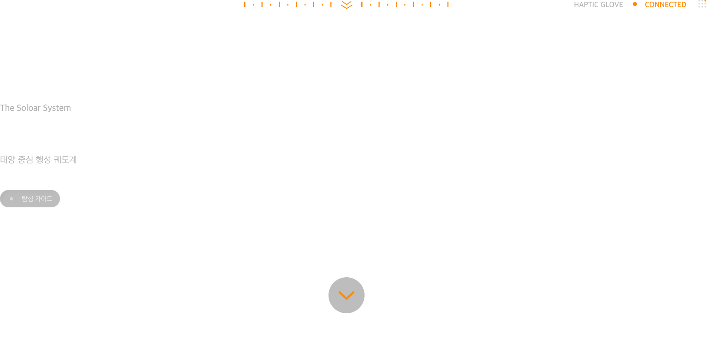
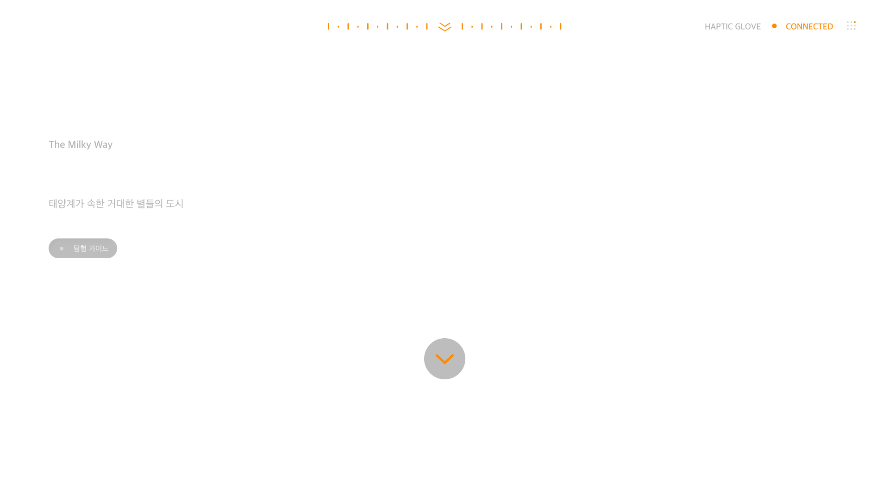

자전
◐
—
대기
≈
—
표면 온도
°
—
←
나가기
별자리
INITIALIZING · 0%
✋ pinch twice to continue

✋ pinch twice to enter universe
HAPTIC GLOVES ·
SCANNING
HEAD MOUNT ·
SCANNING
CLENCH FISTS · OPEN PALMS · TO ENTER
show hands & face to camera
🎙 음성 시작
✨ 별자리
📷 손 인식
⚙ Gemini
음성 인식 대기
대기
🤚 손 제스처 사용법
왼손 손가락 끝 꼬집어 모드 선택
●
엄지 끝 →
A 선택
●
검지 끝 →
D 둘러보기
(↔↕)
●
중지 끝 →
B 비행
그 후 오른손 핀치로 액션 실행
×
Gemini 자연 음성 설정
Google AI Studio API 키
aistudio.google.com
에서 무료 발급. 키는 이 브라우저에만 저장됩니다 (서버나 GitHub에 전송 안 됨).
음성
Kore — 안정적, 차분한 여성
Puck — 밝고 명랑
Aoede — 따뜻한 여성
Charon — 정보전달형
Leda — 젊은 여성
Zephyr — 생기있는 여성
Fenrir — 활기찬 남성
Orus — 차분한 남성
자유 대화 모드 — 인식되지 않은 말은 Gemini에게 물어보고 자연스럽게 답변
🔊 이 목소리로 테스트
텍스처 로딩 중…